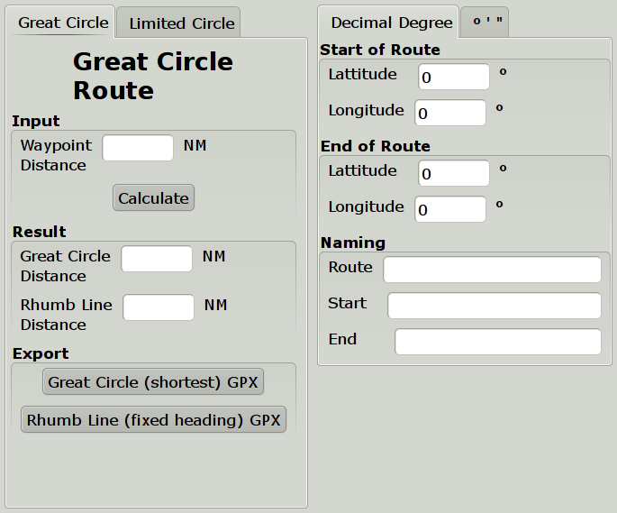
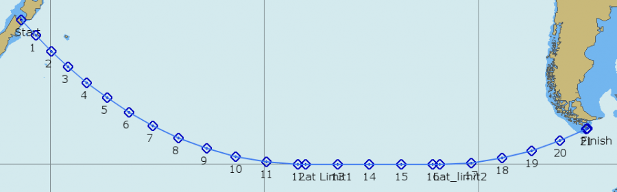

“Salty Paws” route plugin handles much more than Great circles, introduced here.

The plugin has a few features not present in the built-in tool. It can calculate a composite route, and the distance between the waypoints can be set by the user. The end result, however, is a “gpx” file that is exported, and then imported into OpenCPN via the Route Manager.

A Great-circle from Cook Strait to Cape Horn limited by 60° S